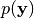

GPy.core package¶
Subpackages¶
- GPy.core.parameterization package
- Submodules
- GPy.core.parameterization.domains module
- GPy.core.parameterization.index_operations module
- GPy.core.parameterization.lists_and_dicts module
- GPy.core.parameterization.observable_array module
- GPy.core.parameterization.param module
- GPy.core.parameterization.parameter_core module
- GPy.core.parameterization.parameterized module
- GPy.core.parameterization.priors module
- GPy.core.parameterization.ties_and_remappings module
- GPy.core.parameterization.transformations module
- GPy.core.parameterization.variational module
- Module contents
Submodules¶
GPy.core.gp module¶
-
class
GPy.core.gp.GP(X, Y, kernel, likelihood, inference_method=None, name='gp', Y_metadata=None, normalizer=False)[source]¶ Bases:
GPy.core.model.ModelGeneral purpose Gaussian process model
Parameters: - X – input observations
- Y – output observations
- kernel – a GPy kernel, defaults to rbf+white
- likelihood – a GPy likelihood
- inference_method – The
LatentFunctionInferenceinference method to use for this GP - normalizer (Norm) – normalize the outputs Y. Prediction will be un-normalized using this normalizer. If normalizer is None, we will normalize using MeanNorm. If normalizer is False, no normalization will be done.
Return type: model object
Note
Multiple independent outputs are allowed using columns of Y
-
infer_newX(Y_new, optimize=True)[source]¶ Infer the distribution of X for the new observed data Y_new.
Parameters: - Y_new (numpy.ndarray) – the new observed data for inference
- optimize (boolean) – whether to optimize the location of new X (True by default)
Returns: a tuple containing the posterior estimation of X and the model that optimize X
Return type: (
VariationalPosterioror numpy.ndarray,Model)
-
log_likelihood()[source]¶ The log marginal likelihood of the model, , this is the objective function of the model being optimised
-
optimize(optimizer=None, start=None, **kwargs)[source]¶ Optimize the model using self.log_likelihood and self.log_likelihood_gradient, as well as self.priors. kwargs are passed to the optimizer. They can be:
Parameters: - max_f_eval (int) – maximum number of function evaluations
- optimizer (string) – which optimizer to use (defaults to self.preferred optimizer), a range of optimisers can be found in :module:`~GPy.inference.optimization`, they include ‘scg’, ‘lbfgs’, ‘tnc’.
Messages: whether to display during optimisation
-
parameters_changed()[source]¶ Method that is called upon any changes to
Paramvariables within the model. In particular in the GP class this method reperforms inference, recalculating the posterior and log marginal likelihood and gradients of the modelWarning
This method is not designed to be called manually, the framework is set up to automatically call this method upon changes to parameters, if you call this method yourself, there may be unexpected consequences.
-
plot(plot_limits=None, which_data_rows='all', which_data_ycols='all', fixed_inputs=[], levels=20, samples=0, fignum=None, ax=None, resolution=None, plot_raw=False, linecol=None, fillcol=None, Y_metadata=None, data_symbol='kx')[source]¶ - Plot the posterior of the GP.
- In one dimension, the function is plotted with a shaded region identifying two standard deviations.
- In two dimsensions, a contour-plot shows the mean predicted function
- In higher dimensions, use fixed_inputs to plot the GP with some of the inputs fixed.
Can plot only part of the data and part of the posterior functions using which_data_rowsm which_data_ycols.
Parameters: - plot_limits (np.array) – The limits of the plot. If 1D [xmin,xmax], if 2D [[xmin,ymin],[xmax,ymax]]. Defaluts to data limits
- which_data_rows (‘all’ or a slice object to slice model.X, model.Y) – which of the training data to plot (default all)
- which_data_ycols (‘all’ or a list of integers) – when the data has several columns (independant outputs), only plot these
- fixed_inputs (a list of tuples) – a list of tuple [(i,v), (i,v)...], specifying that input index i should be set to value v.
- resolution (int) – the number of intervals to sample the GP on. Defaults to 200 in 1D and 50 (a 50x50 grid) in 2D
- levels (int) – number of levels to plot in a contour plot.
- levels – for 2D plotting, the number of contour levels to use is ax is None, create a new figure
- samples (int) – the number of a posteriori samples to plot
- fignum (figure number) – figure to plot on.
- ax (axes handle) – axes to plot on.
- linecol (color either as Tango.colorsHex object or character (‘r’ is red, ‘g’ is green) as is standard in matplotlib) – color of line to plot [Tango.colorsHex[‘darkBlue’]]
- fillcol (color either as Tango.colorsHex object or character (‘r’ is red, ‘g’ is green) as is standard in matplotlib) – color of fill [Tango.colorsHex[‘lightBlue’]]
- Y_metadata (dict) – additional data associated with Y which may be needed
- data_symbol (color either as Tango.colorsHex object or character (‘r’ is red, ‘g’ is green) alongside marker type, as is standard in matplotlib.) – symbol as used matplotlib, by default this is a black cross (‘kx’)
-
plot_f(plot_limits=None, which_data_rows='all', which_data_ycols='all', fixed_inputs=[], levels=20, samples=0, fignum=None, ax=None, resolution=None, plot_raw=True, linecol=None, fillcol=None, Y_metadata=None, data_symbol='kx')[source]¶ Plot the GP’s view of the world, where the data is normalized and before applying a likelihood. This is a call to plot with plot_raw=True. Data will not be plotted in this, as the GP’s view of the world may live in another space, or units then the data.
Can plot only part of the data and part of the posterior functions using which_data_rowsm which_data_ycols.
Parameters: - plot_limits (np.array) – The limits of the plot. If 1D [xmin,xmax], if 2D [[xmin,ymin],[xmax,ymax]]. Defaluts to data limits
- which_data_rows (‘all’ or a slice object to slice model.X, model.Y) – which of the training data to plot (default all)
- which_data_ycols (‘all’ or a list of integers) – when the data has several columns (independant outputs), only plot these
- fixed_inputs (a list of tuples) – a list of tuple [(i,v), (i,v)...], specifying that input index i should be set to value v.
- resolution (int) – the number of intervals to sample the GP on. Defaults to 200 in 1D and 50 (a 50x50 grid) in 2D
- levels (int) – number of levels to plot in a contour plot.
- levels – for 2D plotting, the number of contour levels to use is ax is None, create a new figure
- samples (int) – the number of a posteriori samples to plot
- fignum (figure number) – figure to plot on.
- ax (axes handle) – axes to plot on.
- linecol (color either as Tango.colorsHex object or character (‘r’ is red, ‘g’ is green) as is standard in matplotlib) – color of line to plot [Tango.colorsHex[‘darkBlue’]]
- fillcol (color either as Tango.colorsHex object or character (‘r’ is red, ‘g’ is green) as is standard in matplotlib) – color of fill [Tango.colorsHex[‘lightBlue’]]
- Y_metadata (dict) – additional data associated with Y which may be needed
- data_symbol (color either as Tango.colorsHex object or character (‘r’ is red, ‘g’ is green) alongside marker type, as is standard in matplotlib.) – symbol as used matplotlib, by default this is a black cross (‘kx’)
-
posterior_samples(X, size=10, full_cov=False, Y_metadata=None)[source]¶ Samples the posterior GP at the points X.
Parameters: - X (np.ndarray (Nnew x self.input_dim.)) – the points at which to take the samples.
- size (int.) – the number of a posteriori samples.
- full_cov (bool.) – whether to return the full covariance matrix, or just the diagonal.
- noise_model (integer.) – for mixed noise likelihood, the noise model to use in the samples.
Returns: Ysim: set of simulations, a Numpy array (N x samples).
-
posterior_samples_f(X, size=10, full_cov=True)[source]¶ Samples the posterior GP at the points X.
Parameters: - X (np.ndarray (Nnew x self.input_dim)) – The points at which to take the samples.
- size (int.) – the number of a posteriori samples.
- full_cov (bool.) – whether to return the full covariance matrix, or just the diagonal.
Returns: Ysim: set of simulations
Return type: np.ndarray (N x samples)
-
predict(Xnew, full_cov=False, Y_metadata=None, kern=None)[source]¶ Predict the function(s) at the new point(s) Xnew.
Parameters: - Xnew (np.ndarray (Nnew x self.input_dim)) – The points at which to make a prediction
- full_cov (bool) – whether to return the full covariance matrix, or just the diagonal
- Y_metadata – metadata about the predicting point to pass to the likelihood
- kern – The kernel to use for prediction (defaults to the model kern). this is useful for examining e.g. subprocesses.
Returns: - (mean, var, lower_upper):
mean: posterior mean, a Numpy array, Nnew x self.input_dim var: posterior variance, a Numpy array, Nnew x 1 if full_cov=False, Nnew x Nnew otherwise lower_upper: lower and upper boundaries of the 95% confidence intervals, Numpy arrays, Nnew x self.input_dim
If full_cov and self.input_dim > 1, the return shape of var is Nnew x Nnew x self.input_dim. If self.input_dim == 1, the return shape is Nnew x Nnew. This is to allow for different normalizations of the output dimensions.
-
predict_quantiles(X, quantiles=(2.5, 97.5), Y_metadata=None)[source]¶ Get the predictive quantiles around the prediction at X
Parameters: - X (np.ndarray (Xnew x self.input_dim)) – The points at which to make a prediction
- quantiles (tuple) – tuple of quantiles, default is (2.5, 97.5) which is the 95% interval
Returns: list of quantiles for each X and predictive quantiles for interval combination
Return type: [np.ndarray (Xnew x self.input_dim), np.ndarray (Xnew x self.input_dim)]
-
predictive_gradients(Xnew)[source]¶ Compute the derivatives of the latent function with respect to X*
Given a set of points at which to predict X* (size [N*,Q]), compute the derivatives of the mean and variance. Resulting arrays are sized:
dmu_dX* – [N*, Q ,D], where D is the number of output in this GP (usually one).
dv_dX* – [N*, Q], (since all outputs have the same variance)
Parameters: X (np.ndarray (Xnew x self.input_dim)) – The points at which to get the predictive gradients Returns: dmu_dX, dv_dX Return type: [np.ndarray (N*, Q ,D), np.ndarray (N*,Q) ]
GPy.core.mapping module¶
-
class
GPy.core.mapping.Bijective_mapping(input_dim, output_dim, name='bijective_mapping')[source]¶ Bases:
GPy.core.mapping.MappingThis is a mapping that is bijective, i.e. you can go from X to f and also back from f to X. The inverse mapping is called g().
-
class
GPy.core.mapping.Mapping(input_dim, output_dim, name='mapping')[source]¶ Bases:
GPy.core.parameterization.parameterized.ParameterizedBase model for shared behavior between models that can act like a mapping.
-
df_dX(dL_df, X)[source]¶ Evaluate derivatives of mapping outputs with respect to inputs.
Parameters: - dL_df (ndarray (num_data x output_dim)) – gradient of the objective with respect to the function.
- X (ndarray (num_data x input_dim)) – the input locations where derivatives are to be evaluated.
Returns: matrix containing gradients of the function with respect to the inputs.
-
df_dtheta(dL_df, X)[source]¶ The gradient of the outputs of the mapping with respect to each of the parameters.
Parameters: - dL_df (ndarray (num_data x output_dim)) – gradient of the objective with respect to the function.
- X (ndarray (num_data x input_dim)) – input locations where the function is evaluated.
Returns: Matrix containing gradients with respect to parameters of each output for each input data.
Return type: ndarray (num_params length)
-
plot(*args)[source]¶ - Plots the mapping associated with the model.
- In one dimension, the function is plotted.
- In two dimensions, a contour-plot shows the function
- In higher dimensions, we’ve not implemented this yet !TODO!
Can plot only part of the data and part of the posterior functions using which_data and which_functions
This is a convenience function: arguments are passed to GPy.plotting.matplot_dep.models_plots.plot_mapping
-
-
class
GPy.core.mapping.Mapping_check_df_dX(mapping=None, dL_df=None, X=None)[source]¶ Bases:
GPy.core.mapping.Mapping_check_modelThis class allows gradient checks for the gradient of a mapping with respect to X.
-
class
GPy.core.mapping.Mapping_check_df_dtheta(mapping=None, dL_df=None, X=None)[source]¶ Bases:
GPy.core.mapping.Mapping_check_modelThis class allows gradient checks for the gradient of a mapping with respect to parameters.
-
class
GPy.core.mapping.Mapping_check_model(mapping=None, dL_df=None, X=None)[source]¶ Bases:
GPy.core.model.ModelThis is a dummy model class used as a base class for checking that the gradients of a given mapping are implemented correctly. It enables checkgradient() to be called independently on each mapping.
GPy.core.model module¶
-
class
GPy.core.model.Model(name)[source]¶ Bases:
GPy.core.parameterization.parameterized.Parameterized-
ensure_default_constraints(warning=True)[source]¶ Ensure that any variables which should clearly be positive have been constrained somehow. The method performs a regular expression search on parameter names looking for the terms ‘variance’, ‘lengthscale’, ‘precision’ and ‘kappa’. If any of these terms are present in the name the parameter is constrained positive.
DEPRECATED.
-
objective_function()[source]¶ The objective function for the given algorithm.
This function is the true objective, which wants to be minimized. Note that all parameters are already set and in place, so you just need to return the objective function here.
For probabilistic models this is the negative log_likelihood (including the MAP prior), so we return it here. If your model is not probabilistic, just return your objective to minimize here!
-
objective_function_gradients()[source]¶ The gradients for the objective function for the given algorithm. The gradients are w.r.t. the negative objective function, as this framework works with negative log-likelihoods as a default.
You can find the gradient for the parameters in self.gradient at all times. This is the place, where gradients get stored for parameters.
This function is the true objective, which wants to be minimized. Note that all parameters are already set and in place, so you just need to return the gradient here.
For probabilistic models this is the gradient of the negative log_likelihood (including the MAP prior), so we return it here. If your model is not probabilistic, just return your negative gradient here!
-
optimize(optimizer=None, start=None, **kwargs)[source]¶ Optimize the model using self.log_likelihood and self.log_likelihood_gradient, as well as self.priors.
kwargs are passed to the optimizer. They can be:
Parameters: - max_f_eval (int) – maximum number of function evaluations
- optimizer (string) – which optimizer to use (defaults to self.preferred optimizer)
Messages: whether to display during optimisation
- Valid optimizers are:
- ‘scg’: scaled conjugate gradient method, recommended for stability.
See also GPy.inference.optimization.scg
‘fmin_tnc’: truncated Newton method (see scipy.optimize.fmin_tnc)
‘simplex’: the Nelder-Mead simplex method (see scipy.optimize.fmin),
‘lbfgsb’: the l-bfgs-b method (see scipy.optimize.fmin_l_bfgs_b),
‘sgd’: stochastic gradient decsent (see scipy.optimize.sgd). For experts only!
-
optimize_restarts(num_restarts=10, robust=False, verbose=True, parallel=False, num_processes=None, **kwargs)[source]¶ Perform random restarts of the model, and set the model to the best seen solution.
If the robust flag is set, exceptions raised during optimizations will be handled silently. If _all_ runs fail, the model is reset to the existing parameter values.
Notes
Parameters: - num_restarts (int) – number of restarts to use (default 10)
- robust (bool) – whether to handle exceptions silently or not (default False)
- parallel (bool) – whether to run each restart as a separate process. It relies on the multiprocessing module.
- num_processes – number of workers in the multiprocessing pool
**kwargs are passed to the optimizer. They can be:
Parameters: - max_f_eval (int) – maximum number of function evaluations
- max_iters (int) – maximum number of iterations
- messages (bool) – whether to display during optimisation
Note
If num_processes is None, the number of workes in the
multiprocessing pool is automatically set to the number of processors on the current machine.
-
GPy.core.sparse_gp module¶
-
class
GPy.core.sparse_gp.SparseGP(X, Y, Z, kernel, likelihood, inference_method=None, name='sparse gp', Y_metadata=None, normalizer=False)[source]¶ Bases:
GPy.core.gp.GPA general purpose Sparse GP model
This model allows (approximate) inference using variational DTC or FITC (Gaussian likelihoods) as well as non-conjugate sparse methods based on these.
Parameters: - X (np.ndarray (num_data x input_dim)) – inputs
- likelihood (GPy.likelihood.(Gaussian | EP | Laplace)) – a likelihood instance, containing the observed data
- kernel (a GPy.kern.kern instance) – the kernel (covariance function). See link kernels
- X_variance (np.ndarray (num_data x input_dim) | None) – The uncertainty in the measurements of X (Gaussian variance)
- Z (np.ndarray (num_inducing x input_dim)) – inducing inputs
- num_inducing (int) – Number of inducing points (optional, default 10. Ignored if Z is not None)
GPy.core.sparse_gp_mpi module¶
-
class
GPy.core.sparse_gp_mpi.SparseGP_MPI(X, Y, Z, kernel, likelihood, variational_prior=None, inference_method=None, name='sparse gp mpi', Y_metadata=None, mpi_comm=None, normalizer=False)[source]¶ Bases:
GPy.core.sparse_gp.SparseGPA general purpose Sparse GP model with MPI parallelization support
This model allows (approximate) inference using variational DTC or FITC (Gaussian likelihoods) as well as non-conjugate sparse methods based on these.
Parameters: - X (np.ndarray (num_data x input_dim)) – inputs
- likelihood (GPy.likelihood.(Gaussian | EP | Laplace)) – a likelihood instance, containing the observed data
- kernel (a GPy.kern.kern instance) – the kernel (covariance function). See link kernels
- X_variance (np.ndarray (num_data x input_dim) | None) – The uncertainty in the measurements of X (Gaussian variance)
- Z (np.ndarray (num_inducing x input_dim)) – inducing inputs
- num_inducing (int) – Number of inducing points (optional, default 10. Ignored if Z is not None)
- mpi_comm (mpi4py.MPI.Intracomm) – The communication group of MPI, e.g. mpi4py.MPI.COMM_WORLD
-
optimizer_array¶ Array for the optimizer to work on. This array always lives in the space for the optimizer. Thus, it is untransformed, going from Transformations.
Setting this array, will make sure the transformed parameters for this model will be set accordingly. It has to be set with an array, retrieved from this method, as e.g. fixing will resize the array.
The optimizer should only interfere with this array, such that transformations are secured.